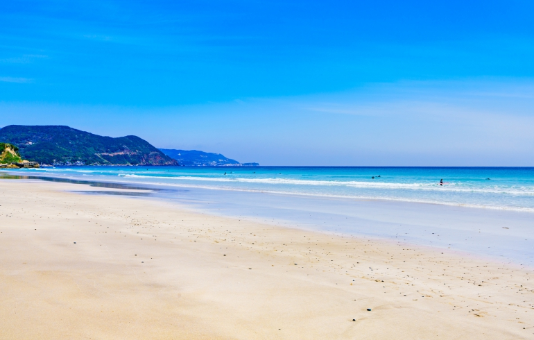
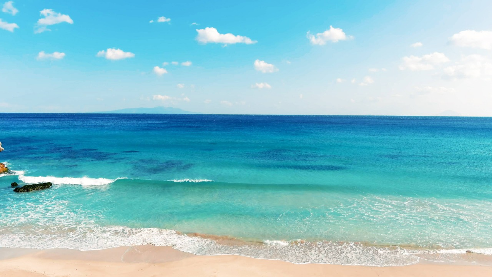
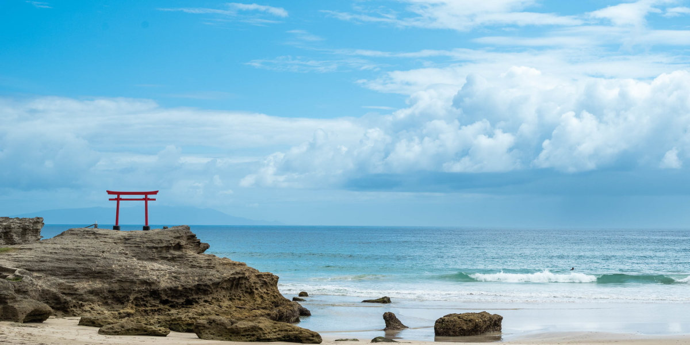
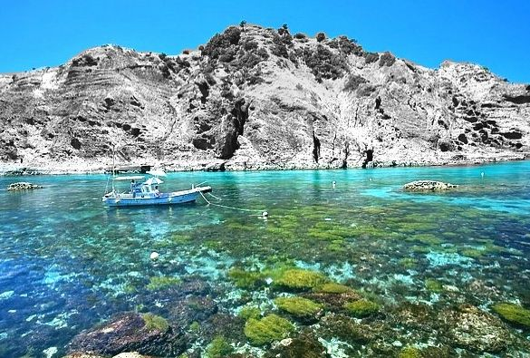
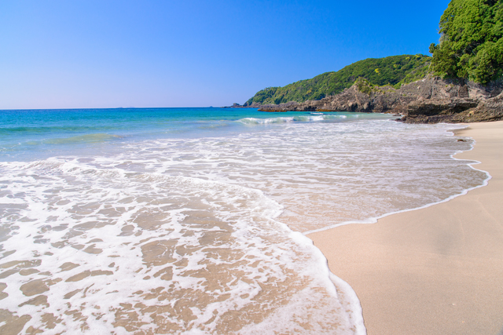
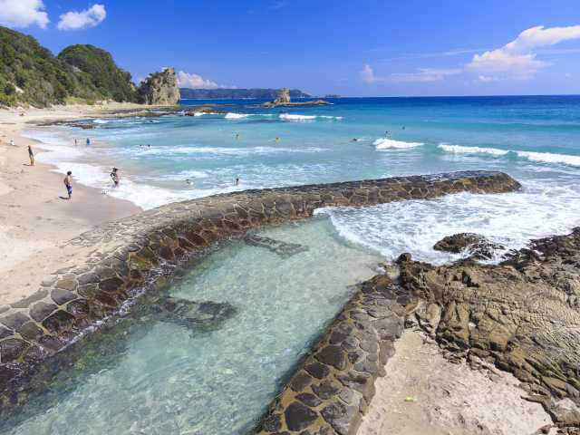
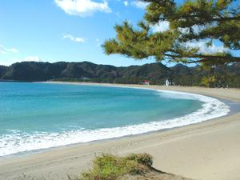
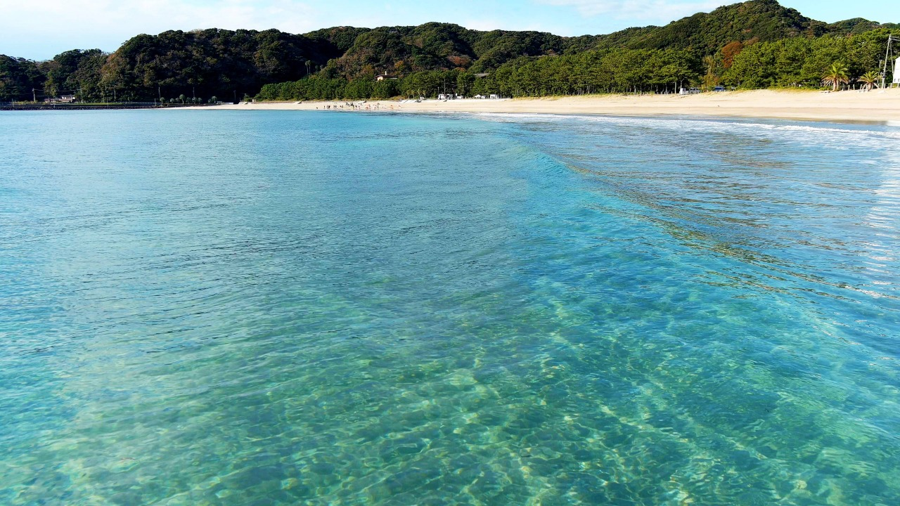
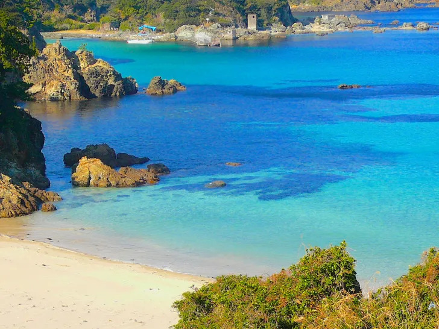
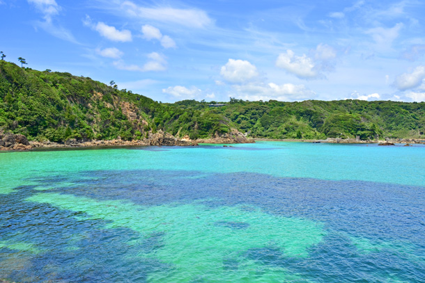

SEA
Beautiful Beaches of Izu
白い砂浜、透き通る海、 伊豆ならではの美しいビーチをご紹介します。

01


SHIRAHAMA BEACH
白浜海岸
伊豆を代表する美しい海岸。 白い砂浜と透き通る海が広がり、 夏には多くの観光客が訪れる人気のビーチです。
所在地
静岡県下田市
透明度
★★★★★
おすすめ
家族・カップル
アクセス
伊豆急下田駅から車約10分
02


HIRIZO BEACH
ヒリゾ浜
船でしか訪れることのできない 秘境のような美しい海。 伊豆屈指の透明度を誇り、 シュノーケリングスポットとして人気があります。
所在地
南伊豆町
透明度
★★★★★
おすすめ
シュノーケリング
アクセス
中木港から船で約5分
03


KISAMI BEACH
吉佐美大浜
海外のビーチを思わせるような 広い砂浜が魅力の海岸。 サーフィンや海辺の散歩など、 ゆったりとした時間を楽しめます。
所在地
下田市吉佐美
透明度
★★★★☆
おすすめ
サーフィン・散歩
アクセス
伊豆急下田駅から車約10分
04


YUMIGAHAMA BEACH
弓ヶ浜
弓のように美しい形をした海岸。 白い砂浜と穏やかな波が特徴で、 ゆったりと海を楽しみたい方におすすめの 伊豆を代表するビーチです。
所在地
南伊豆町
透明度
★★★★☆
おすすめ
家族・ゆったり旅
アクセス
伊豆急下田駅からバス約20分
05


KUJUHAMA BEACH
九十浜海水浴場
小さな入り江に広がる、 隠れ家的な雰囲気のビーチ。 透明度の高い海と自然に囲まれた景色が魅力で、 静かに過ごしたい方におすすめです。
所在地
下田市須崎
透明度
★★★★★
おすすめ
写真撮影・静かな時間
アクセス
伊豆急下田駅から車約15分